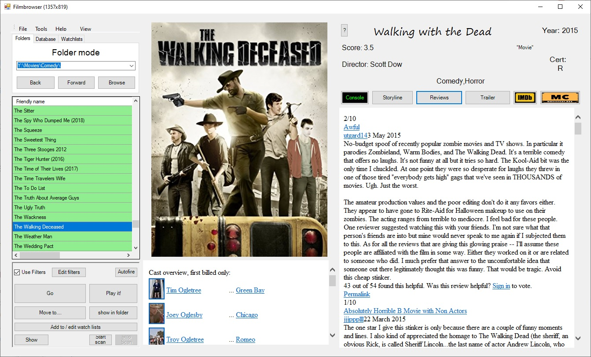
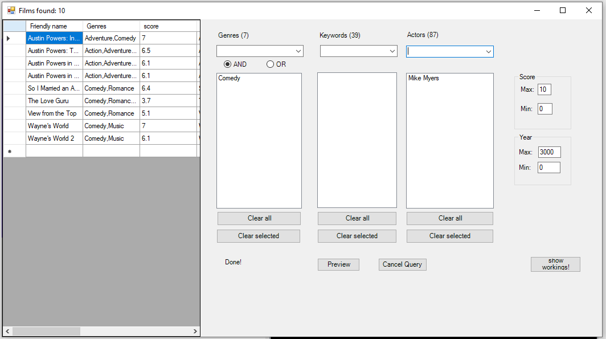
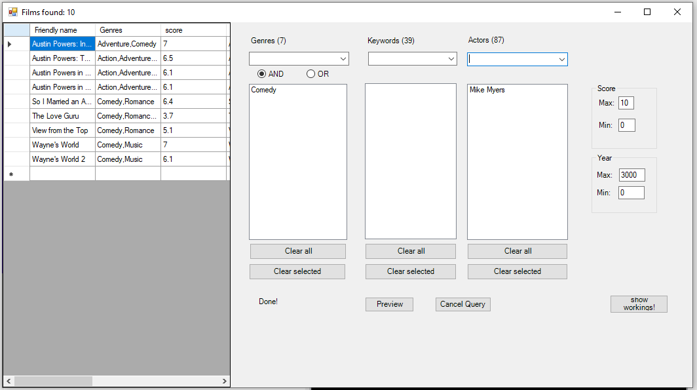

What is a movie catalog application?
Well, suppose you collected hundreds of dvds over the years and put them all on your hard drive.
Looking at the titles alone, it will be tricky to decide what to watch. The Filmbrowser application will browse the folders you point it at and gather and display all the info you need:
Basically all the useful info IMDB has, without you having to navigate the site for each title.
Additionally it stores all this data in a database.
Once all your movies are catalogued you can use the database to filter or select titles by genre / year / score /actors / keywords etc or any combination thereof
Well, suppose you collected hundreds of dvds over the years and put them all on your hard drive.
Looking at the titles alone, it will be tricky to decide what to watch. The Filmbrowser application will browse the folders you point it at and gather and display all the info you need:
- Poster
- Cast List
- Storyline
- Reviews
- Keywords
- Score
- Director
Basically all the useful info IMDB has, without you having to navigate the site for each title.
Additionally it stores all this data in a database.
Once all your movies are catalogued you can use the database to filter or select titles by genre / year / score /actors / keywords etc or any combination thereof
This is the main navigation and movie info display screen:

700x387
Features
- Clickable links to imdb actor profiles
- Clickable links to imdb trailers
- Play it now button
- Watchlists - you can make multiple lists watch/play lists
- Database indexing and searching
- View Reviews
- View Storyline
- View trailer, if available
- Scan folder to get all movies data into database
- Automatic checking and installing of new / updates to the software
The Benefit of the app storing all the details in a database is that you
can then search and query your colection by genre or actor , or any other way:
This is the database query screen:
currently searching for comedy films with Mike Myers in

can then search and query your colection by genre or actor , or any other way:
This is the database query screen:
currently searching for comedy films with Mike Myers in
